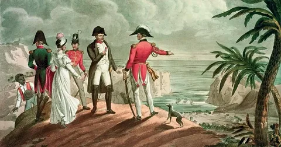
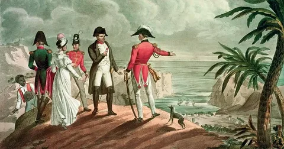

"Успех — вот что создает великих людей"
Привет
привет

привет

ИмяНаполеон БонапартДата рождения15 августа, 1769 годДата смерти5 мая, 1821 год |
 

В 1789 году началась Французская революция, Наполеон принял в ней участие. Подавив контрреволюционное восстание в Тулоне, поддерживаемое англичанами, он высоко продвинулся по карьерной лестнице и был удостоен чести командовать своей собственной армией.
В 1796 году под конец войны Первой Коалиции, французами была спланирована блестящая атака на Австрию, чтобы вывести её из войны. Они планировали напасть с трёх сторон, где армия Наполеона служила для отвлечения внимания, но в итоге устроила главное зрелище на поле боя. Пока две основные армии застряли на севере и получили серьёзный отпор, Наполеон, в свойственной ему манере, разделил армию противника, превосходившую его числом, а потом уничтожил по частям. Во время знаменитого сражения под Лоди, Наполеон сам принимал участие в битве, чем завоевывал огромное уважение среди солдат. В итоге австрийцам пришлось подписать мир с французами.
Когда Наполеон вернулся во Францию, его встречали как национального героя, и непопулярное в то время правительство решило отправить Наполеона в Египет бороться с англичанами, так как они опасались того, что он захватит власть. Получив поражение в Египте, Наполеон оставил своих солдат и вернулся во Францию. Поход в Египет оказался неудачен, но Наполеон любил преувеличивать свои успехи, поэтому, вернувшись на Родину, его встретили как героя.
В 1800 году, в разгар войны Второй Коалиции, Наполеон провел всю свою армию через Альпы, чтобы застать врасплох австрийцев, осаждающих Женеву. Когда Наполеон объявился в Италии, австрийцы решили, что Наполеон сразу нападет на них, но тот пошёл в Милан, чтобы получить снабжение. В знаменитой битве при Моренго, австрийцам удалось разбить Наполеона, но через некоторое время Наполеон привел подкрепление и разбил совершенно не готовых к бою австрийцев. Вскоре, австрийцы запросили мир, который был заключен в 1801 году. В итоге в Европе ненадолго образовался мир.
После войны Наполеон занялся своей страной, он провел денежную и образовательную реформы, сделал единый свод законов, убрал из правительства коррумпированных чиновников, а также уменьшил права некоторых социальных групп, в том числе женщин.
2 декабря 1804 года, Наполеон стал Императором Франции, водрузив корону на свою голову самостоятельно.
В 1803 году началась война Третей Коалиции и снова завершилась разгромом союзных войск и победой Наполеона.
В 1806 году началась война Четвертой Коалиции, и в неё вступил прусский король. В итоге французы разбили прусаков в битве при Ене. Затем французы стали догонять прусскую армию, захватив по пути Берлин. Прусскому королю удалось сбежать с армией на Восток. Потом началась зима, и зимние битвы подкосили обе стороны. Было заключено перемирие. Зима закончилась, бои возобновились. Русским(союзники Пруссии) пришлось отходить под Фридланд. Там генерал Беннигсен допустил ошибку, расположив свои войска вдоль рек Ален. В итоге Наполеон разгромил войска русских и выиграл войну Четвертой Коалиции.
В 1806 году Наполеон объявил Континентальную блокаду, чем полностью отрезал Англию от торговли с континентальной Европой.
В апреле 1809 года началась война Пятой Коалиции, а закончилась она уже в октябре разгромом австрийской армии.
В 1812 году Наполеон начал войну с Россией, так как она не соблюдала условий Континентальной Блокады. Наполеон собрал самую мощную армию на то время, примерно состоящую из 650 000 человек. Русские использовали тактику выжженной земли, чтобы французы не могли восполнять запасы провианта на завоеванных землях. Русские убегали до самой Москвы, но жаркое лето уничтожило армию Наполеона. В итоге при Бородинском сражении за Москву Наполеон выиграл, но потерял много людей, а русские сохранили армию и покинули Москву. Наполеон зашёл в разорённую и сожжённую Москву, он считал, что победил. Поэтому он выслал письмо Александру, царю Российской Империи, но так и не получив ответа, был вынужден покинуть Россию. Пока он шёл по той же разорённой дороге, партизаны совершали вылазки, чтобы рассредоточить армию противника. В итоге он покинул границы Российской Империи с армией численностью менее 100 000 человек.
В 1813 году началась война Шестой Коалиции. В битве при Лейпциге французы отчаянно сражались, но были вынуждены покинуть город. Из-за того, что мост был взорван слишком рано, 30 000 французских солдат либо утонули, либо попали в плен. Наполеон созвал ещё больше призывников, чтобы защитить свой народ, но союзные войска вошли в Париж, и Наполеон проиграл. Его вынудили отказаться от престола, а союзники решили отправить его на остров Эльба и сделать его правителем Эльбы. Наполеон хорошо управлял островом, но ему было грустно от того, что раньше он был хозяином Европы, а сейчас он управляет маленьким островом. Наполеон смог сбежать с острова на корабле и с армией в 1000 человек направиться в Париж. Король отправил людей, чтобы арестовать Наполеона, но эти люди были прежними солдатами Наполеона, поэтому они перешли на его сторону. В итоге Наполеон вошёл в Париж без сопротивления.
Союзные державы тут же объявили войну, но не Франции, а лично Наполеону. На севере была Армия прусаков и англичан, численно превосходившая его армию. Он решил в своей любимой манере разделить армии и уничтожить их по отдельности, но в битве при Ватерлоо англичанам удалось сдержать натиск французов и дождаться подкрепления в виде прусаков. Проиграв эту битву, Наполеон проиграл свою возможность оставить себе престол. Союзники вошли в Париж и решили отправить Наполеона на остров святой Елены. Этот остров хорошо охранялся, поэтому возможности сбежать не было. Там Наполеон начал писать автобиографию. Умер Наполеон в 1821 в возрасте 51 года от рака желудка.